🌿 2. Ramas en Git¶
Descarga de diapositivas
Las ramas son una de las características más útiles de Git. Permiten trabajar en una nueva funcionalidad, arreglar un error o hacer un experimento sin tocar el código que ya funciona. Cuando terminas, decides si integras ese trabajo o lo descartas.
Sin ramas, cualquier cambio a medias quedaría mezclado con el código estable. Con ramas, tienes tu propio espacio de trabajo aislado.
🌳 ¿Qué es una rama?¶
Piensa en el historial de commits como una línea de tiempo. Una rama es simplemente una etiqueta que apunta a un commit concreto y que avanza automáticamente cada vez que haces un nuevo commit estando en ella.
La rama por defecto se llama main (o master en repositorios más antiguos). Cuando creas una rama nueva, Git pone otra etiqueta en el mismo sitio donde estás tú en ese momento. A partir de ahí, cada rama puede avanzar de forma independiente.
gitGraph
commit id: "Commit A"
commit id: "Commit B"
branch experimento
checkout experimento
commit id: "Cambio experimental"
checkout main
commit id: "Commit C (main sigue)"Lo que ves arriba: main y experimento parten del mismo punto (Commit B) y cada una avanza por su lado sin pisarse.
🔖 ¿Qué es HEAD?¶
HEAD es un puntero especial que indica en qué rama (y commit) estás trabajando ahora mismo. Lo verás constantemente en la salida de git log, git status y git lga.
Idea clave
HEAD -> main significa: "Estoy en la rama main, y el commit actual es este."
Cuando cambias de rama con git switch, HEAD se mueve contigo.
🛠️ Comandos básicos¶
Ver ramas¶
Para ver qué ramas tienes y en cuál estás (marcada con *):
| Bash | |
|---|---|
Crear una rama¶
Crea una nueva etiqueta en el commit actual, pero no te mueves a ella:
| Bash | |
|---|---|
Cambiar de rama¶
Para moverte a una rama existente:
| Bash | |
|---|---|
¿Por qué existe git switch?
git checkout hacía demasiadas cosas distintas: cambiar de rama, recuperar archivos, moverse a un commit suelto… Era confuso. Git 2.23 introdujo git switch (solo para ramas) y git restore (solo para archivos) para separar responsabilidades. Ambas sintaxis funcionan, pero switch es más clara.
Para crear una rama y moverte a ella en un solo paso:
Borrar una rama¶
Cuando has terminado con una rama y ya has fusionado su trabajo:
| Bash | |
|---|---|
git branch -d vs -D
Con -d (minúscula), Git se niega a borrar la rama si detecta que tiene commits que no están en ninguna otra rama — te está protegiendo de perder trabajo.
Con -D (mayúscula), borra sin preguntar aunque haya commits sin fusionar. Úsala solo cuando estás seguro de que quieres descartar ese trabajo.
Tabla resumen¶
| Comando | Qué hace | Cuándo usarlo |
|---|---|---|
git branch |
Lista ramas | Para ver en cuál estás |
git branch <nombre> |
Crea rama | Antes de empezar algo nuevo |
git switch <nombre> |
Cambia de rama | Para moverte a otro contexto |
git switch -c <nombre> |
Crea y cambia | Atajo para los dos pasos anteriores |
git branch -d <nombre> |
Borra rama (seguro) | Tras fusionar |
git branch -D <nombre> |
Borra rama (forzado) | Para descartar trabajo intencionalmente |
👁️ Visualizando el historial (Alias git lga)¶
Para entender qué está pasando con las ramas, es vital ver el grafo de commits. El comando completo es largo:
| Bash | |
|---|---|
Lo más práctico es crear un alias llamado lga. Ejecútalo una sola vez:
| Bash | |
|---|---|
A partir de ahí, git lga te muestra un mapa visual de todas las ramas en cualquier repositorio.
🚀 Historia de una rama: el ciclo completo¶
Para ver cómo encaja todo, vamos a seguir un ejemplo paso a paso. Estás desarrollando una web y quieres experimentar con el color de fondo sin romper lo que ya funciona.
1. El punto de partida¶
Estás en main. Todo funciona. Compruebas dónde estás con git status y ves el historial con git lga.
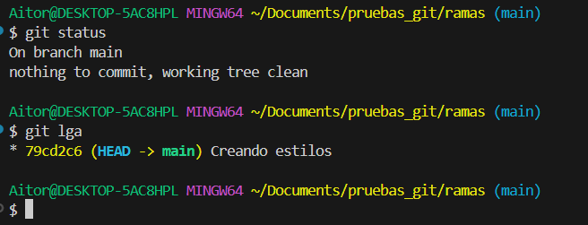
Qué estás viendo en la captura
- Estás en
main(On branch main). HEAD -> mainen el log indica que es donde estás ahora mismo.
2. Creando la rama¶
Creas una rama para el experimento. Git pone una nueva etiqueta en el commit actual.
| Bash | |
|---|---|
Si miras el historial ahora, main y experimento-fondo apuntan al mismo commit. El asterisco (o el color) te recuerda que todavía estás en main.
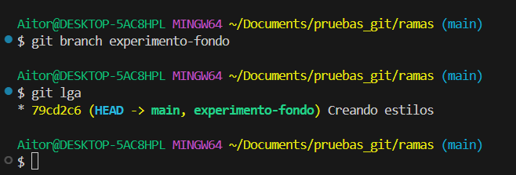
Qué estás viendo en la captura
- Ambas etiquetas (
mainyexperimento-fondo) están en el mismo punto. HEAD -> mainconfirma que aún no te has movido.
3. Moviéndote a la nueva rama¶
Ahora sí te mudas:
| Bash | |
|---|---|
Git te confirma el cambio con Switched to branch 'experimento-fondo'.
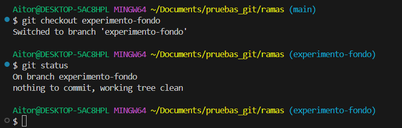
Qué estás viendo en la captura
- El mensaje
Switched to branch 'experimento-fondo'. git statusmuestraOn branch experimento-fondo.
4. Trabajando en la rama¶
Ahora cualquier commit que hagas afectará solo a esta rama. Modificas estilos.css y haces commit:
En este momento, experimento-fondo ha avanzado un commit. main no se ha movido.
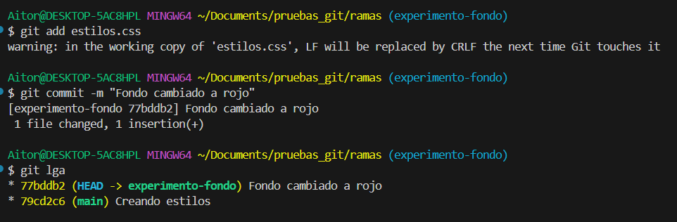
Qué estás viendo en la captura
experimento-fondo(donde está tuHEAD) aparece un nivel por delante.mainse ha quedado en el commit anterior, intacta.
5. Volviendo a main¶
El experimento ha ido bien. Para fusionarlo, primero tienes que volver al destino:
| Bash | |
|---|---|
Si abres estilos.css, el fondo rojo ha desaparecido. No te asustes: tus cambios están seguros en experimento-fondo, Git simplemente ha restaurado los archivos al estado de main.
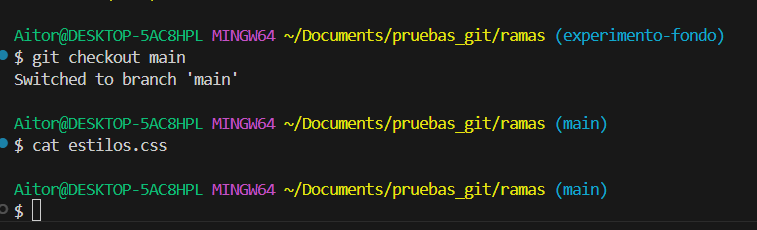
Qué estás viendo en la captura
- Has vuelto a
main. - El código de los archivos está exactamente como antes del experimento.
6. La fusión (git merge)¶
Estando en main, traes los cambios de la otra rama:
| Bash | |
|---|---|
Como main no ha avanzado mientras trabajabas, Git hace un Fast-forward: simplemente mueve la etiqueta main hasta donde está experimento-fondo. No crea ningún commit extra.
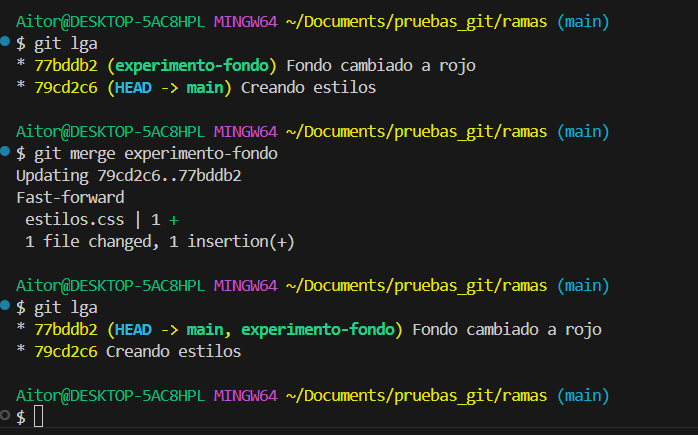
Qué estás viendo en la captura
- Git usa la estrategia Fast-forward porque no ha habido commits en
mainmientras tanto. - Con
git lgaverás quemainyexperimento-fondoapuntan al mismo commit.
7. Limpieza¶
La rama ha cumplido su función. Su trabajo ya está en main. La borras:
| Bash | |
|---|---|
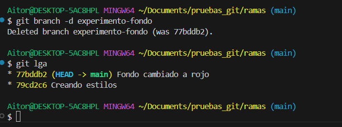
Qué estás viendo en la captura
Deleted branch experimento-fondo...confirma el borrado.git lgamuestra un solo flujo limpio enmain.
🔗 Fusiones (Merges)¶
Cuando has terminado de trabajar en una rama, llega el momento de incorporar esos cambios a main. Eso es una fusión: le dices a Git "trae lo que hay en esta rama y mézclalo con lo que tengo aquí".
El comando siempre es el mismo — primero te sitúas en la rama destino, luego fusionas:
Lo que cambia es cómo Git resuelve la fusión por dentro. Dependiendo de lo que haya ocurrido mientras trabajabas, Git puede encontrarse en dos situaciones muy distintas.
Ocurre cuando main no ha avanzado desde que creaste tu rama. Git simplemente mueve el puntero hacia adelante. El historial queda lineal y limpio, como si hubieras trabajado directamente en main.
gitGraph
commit id: "A"
commit id: "B"
branch feature
checkout feature
commit id: "C"
commit id: "D"
checkout main
merge featureEs el caso más sencillo. No hace falta hacer nada especial: git merge <rama> lo detecta solo y no crea ningún commit extra.
Ocurre cuando main sí ha avanzado mientras trabajabas en tu rama. Las dos líneas han divergido y Git no puede simplemente mover un puntero. Tiene que crear un commit de merge que une ambas historias.
gitGraph
commit id: "A"
commit id: "B"
branch feature
checkout feature
commit id: "C (feature)"
checkout main
commit id: "D (main)"
merge feature id: "Merge commit"Git busca el ancestro común de ambas ramas (punto B), compara los cambios de cada lado y los une. Si no hay líneas en conflicto, lo hace automáticamente y crea el merge commit.
El merge commit y el editor¶
Cuando Git necesita crear un merge commit (caso 3-way), abre tu editor de terminal para que confirmes el mensaje. Suele ser Vim o Nano.
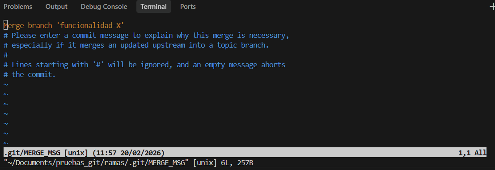
Qué estás viendo en la captura
- Un editor de texto pidiéndote confirmar o modificar el mensaje del merge commit.
- Las líneas con
#son comentarios que Git ignorará.
¿Cómo salgo del editor?
- Vim (lo más habitual): pulsa
Esc, luego escribe:wqy pulsaEnter. - Nano:
Ctrl + Opara guardar,Enterpara confirmar,Ctrl + Xpara salir.
Antes y después del merge con ramas divergidas:
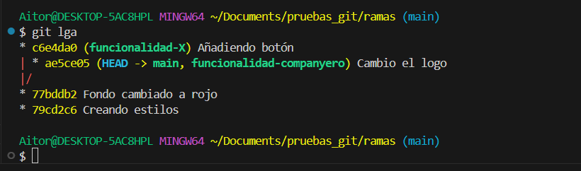
Qué estás viendo en la captura
- El historial antes de fusionar:
mainyfuncionalidad-Xse han separado. Cada una tiene commits que la otra no tiene.
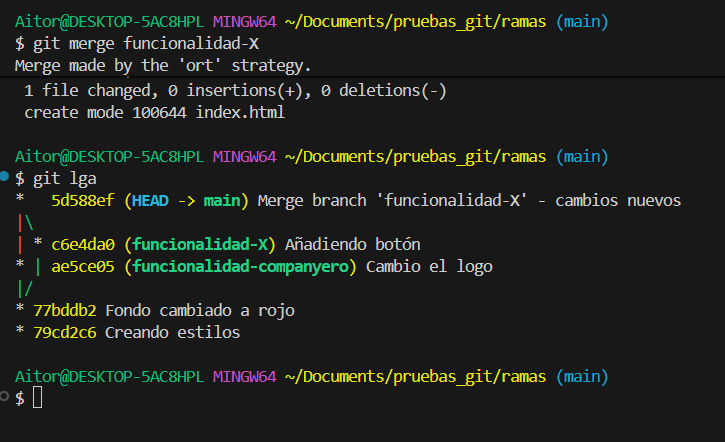
Qué estás viendo en la captura
- El nuevo merge commit une las dos líneas. El grafo muestra el bucle cerrado: los dos caminos vuelven a converger en
main.
⚔️ Conflictos¶
Un conflicto ocurre cuando Git intenta fusionar dos ramas y encuentra que las mismas líneas de un mismo archivo han sido modificadas de forma diferente en cada una. Git no sabe cuál de las dos versiones quedarse, así que para y te pide que decidas tú.
Cuándo ocurre un conflicto
Si tú has cambiado la línea 5 de estilos.css en tu rama, y tu compañero también ha cambiado la línea 5 de estilos.css en main, Git no puede elegir por ti. Tendrás que resolver el conflicto a mano.
Si cada uno ha tocado líneas distintas, Git las combina sin problema y no hay conflicto.
Cuando ocurre un conflicto, Git detiene el merge y marca los archivos afectados. El proceso para resolverlo es siempre el mismo:
- Git detiene la operación y te avisa del conflicto.
-
Abres el archivo. Dentro verás marcas como estas:
-
Editas el archivo: borras las marcas (
<<<,===,>>>) y dejas solo la versión final que quieres. - Añades el archivo resuelto al staging:
git add archivo.txt - Cierras el merge con un commit:
git commit
Ejemplo paso a paso:
Sobre las capturas siguientes
Nos centramos en el proceso de resolución. Algunos comandos básicos (como git branch o git status) se omiten visualmente para ir al grano.
-
En
main, creastitulo.txtcon el textoHola Mundoy haces commit.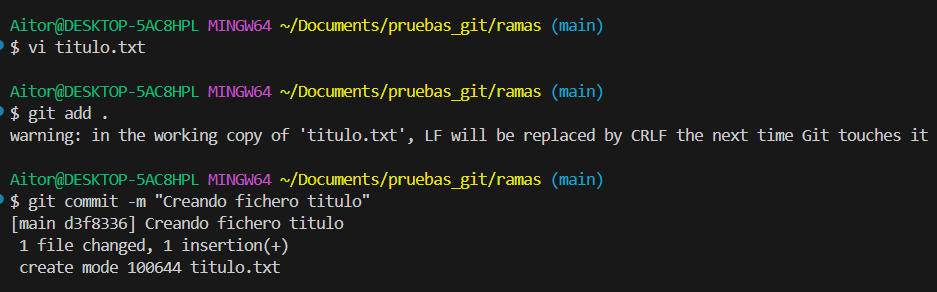
Qué estás viendo en la captura - La creación del archivo y el primer commit en
main. -
Creas la rama
cambio-titulo, cambias la línea aHola Universoy haces commit.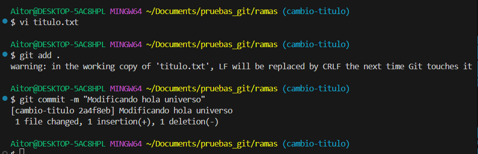
Qué estás viendo en la captura - La modificación y su commit en la nueva rama.
Recuerda
Aunque la captura no muestre el comando de cambio de rama, la terminal suele indicar en qué rama estás entre paréntesis:
(cambio-titulo). Puedes usar cualquier editor para modificar el archivo — no es obligatorio usarvi. -
Vuelves a
mainy cambias la misma línea aHola Planeta. Haces commit.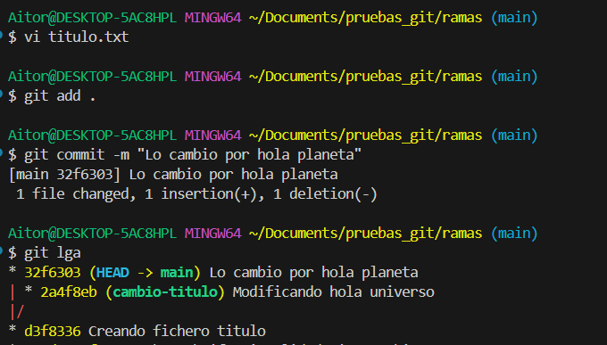
Qué estás viendo en la captura - El cambio en
mainy ungit lgaque muestra que las dos ramas han avanzado por separado tocando el mismo archivo. -
Intentas fusionar:
Bash -
Git lanza el error de conflicto.
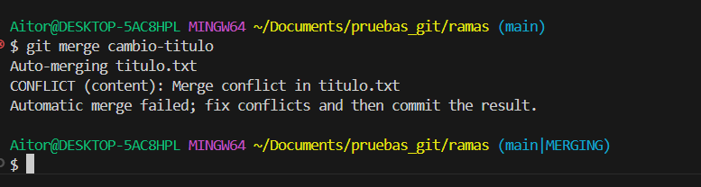
Qué estás viendo en la captura - Git detecta que la misma línea ha sido modificada de forma distinta en ambas ramas y detiene la fusión.
-
Abres el archivo en tu editor y ves las marcas del conflicto.
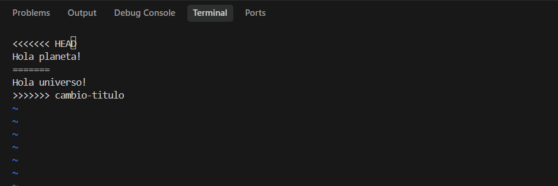
Qué estás viendo en la captura -
<<<<<<< HEADmarca los cambios demain.>>>>>>> cambio-titulomarca los cambios entrantes. La línea=======los separa. -
Editas el archivo, eliminas las marcas y dejas solo la versión final (por ejemplo,
Hola Planeta!).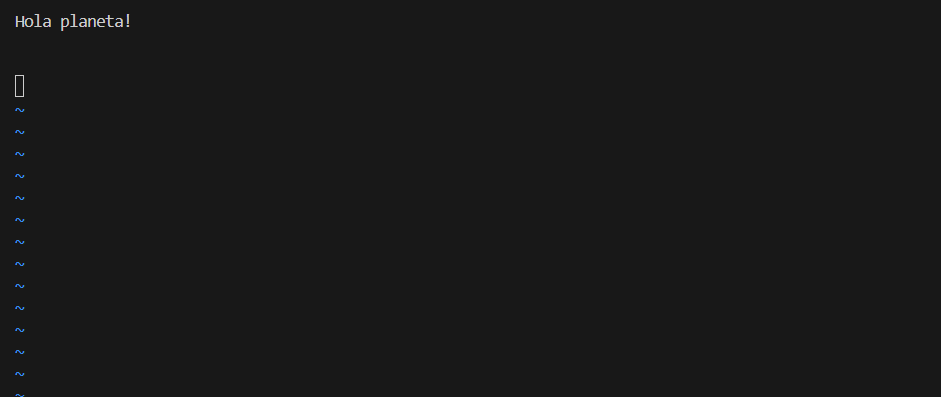
Qué estás viendo en la captura - El archivo limpio, sin marcas de Git. Solo la versión que has decidido conservar.
-
Resuelves el conflicto y cierras el merge:
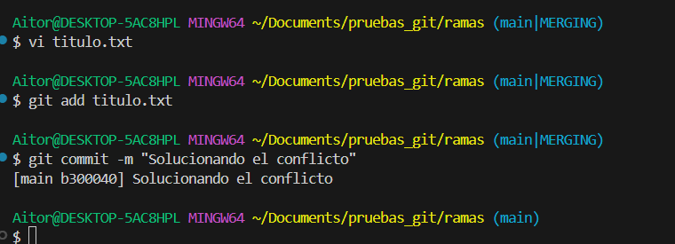
Qué estás viendo en la captura - La confirmación de que el archivo ha entrado al staging y el merge commit ha quedado registrado.
-
El historial vuelve a unirse.
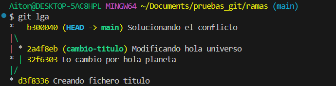
Qué estás viendo en la captura -
git lgamuestra el merge commit uniendo las dos líneas. El proceso ha terminado correctamente. -
Resultado final del archivo:
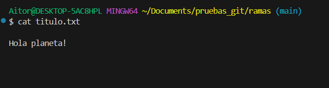
Qué estás viendo en la captura - El contenido definitivo del archivo, tal como lo has decidido tú al resolver el conflicto.
🖥️ Ramas desde IntelliJ¶
No es obligatorio usar la terminal para todo. IntelliJ tiene integración completa con Git y puedes gestionar ramas desde la interfaz gráfica.
Gestión de ramas en IntelliJ
En la barra inferior de IntelliJ verás el nombre de la rama actual. Haz clic en él para:
- Ver todas las ramas locales y remotas.
- Crear una rama nueva (
New Branch). - Cambiar de rama con un clic (
Checkout). - Fusionar o hacer rebase desde el menú contextual.
Los comandos que hace IntelliJ por debajo son exactamente los mismos que has practicado en terminal. Entenderlos te ayuda a saber qué está pasando cuando algo falla en la GUI.
📚 Recursos adicionales¶
✅ Ideas clave¶
Abrir resumen
git branch <nombre>crea una nueva rama (sin moverte a ella).git switch <nombre>(ogit checkout <nombre>) te mueve a otra rama.git switch -c <nombre>crea la rama y te mueve en un solo paso.HEADapunta siempre a la rama y commit donde estás trabajando ahora.git merge <rama>trae los cambios de esa rama a la rama donde estás.- Fast-forward:
mainno ha avanzado → Git mueve el puntero. Historial lineal. - Merge commit: ambas ramas han avanzado → Git crea un commit de unión.
- Los conflictos ocurren cuando dos ramas han tocado las mismas líneas del mismo archivo.
git branch -d <nombre>borra si ya está fusionada;-Dborra sin comprobación.git lga(alias degit log --graph --oneline --all --decorate) muestra el grafo de ramas.